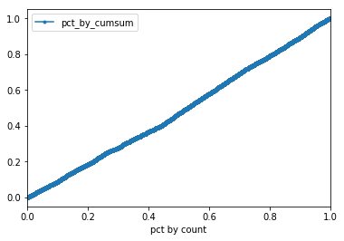
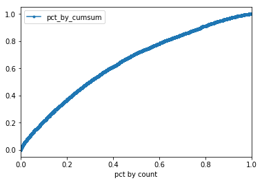

In [112]: runfile('/Volumes/GoogleDrive/My Drive/Projects/2018 Dimagi Pali Working Folder/_Neal 2 - ABCDS/Data Set #3 ABCDS/test5 - ABCDS wider with presenation.py')
shape = (69066, 92)
cleaned shape = (69066, 77)
target = caesarean
<class 'sklearn.ensemble.gradient_boosting.GradientBoostingClassifier'>
accuracy: 0.940673978355 , model_roc_auc: 0.612811868105
confusion matrix
[[25987 3]
[ 1636 1]]
prevelence in y_test:
0 0.940746
1 0.059254
Name: caesarean, dtype: float64
0 25990
1 1637
Name: caesarean, dtype: int64
Features sorted by their score: target = caesarean
feature_importance feature cum_importance
0 0.2326 totalTime_20daysPriorToBirth 0.2326
1 0.1471 days_diff 0.3797
2 0.0905 anyYes20daysPriorToBirth_form_last_preg_tt_loaded 0.4702
3 0.0417 numVisits_20daysPriorToBirth 0.5119
4 0.0360 anyYes20daysPriorToBirth_form_family_planning_... 0.5479
5 0.0235 anyYes20daysPriorToBirth_form_bp2_skin_to_skin 0.5714
6 0.0215 anyYes20daysPriorToBirth_form_bp2_materials 0.5929
7 0.0204 anyYes20daysPriorToBirth_form_bp1_immu_card_av... 0.6133
8 0.0185 anyYes20daysPriorToBirth_form_play_family_plan... 0.6318
9 0.0179 anyYes20daysPriorToBirth_form_bp2_sba 0.6497
ORDERED BY: anyYes20daysPriorToBirth_form_has_bank_account , range = 0.1 percentile, TARGET = caesarean
anyYes20daysPriorToBirth_form_has_bank_account caesarean count target_cumsum pct by count pct_by_cumsum
37437 3 0 69 2 0.000999 0.000476 lift= -0% or 0.5x
ORDERED BY: anyYes20daysPriorToBirth_form_has_bank_account , range = 0.5 percentile, TARGET = caesarean
anyYes20daysPriorToBirth_form_has_bank_account caesarean count target_cumsum pct by count pct_by_cumsum
36642 3 0 345 20 0.004995 0.004762 lift= -0% or 1.0x
ORDERED BY: anyYes20daysPriorToBirth_form_has_bank_account , range = 1 percentile, TARGET = caesarean
anyYes20daysPriorToBirth_form_has_bank_account caesarean count target_cumsum pct by count pct_by_cumsum
38939 3 0 691 36 0.010005 0.008571 lift= -0% or 0.9x
ORDERED BY: anyYes20daysPriorToBirth_form_has_bank_account , range = 5 percentile, TARGET = caesarean
anyYes20daysPriorToBirth_form_has_bank_account caesarean count target_cumsum pct by count pct_by_cumsum
44586 3 0 3453 191 0.049996 0.045476 lift= -0% or 0.9x
ORDERED BY: anyYes20daysPriorToBirth_form_has_bank_account , range = 10 percentile, TARGET = caesarean
anyYes20daysPriorToBirth_form_has_bank_account caesarean count target_cumsum pct by count pct_by_cumsum
22788 3 0 6907 369 0.100006 0.087857 lift= -1% or 0.9x
ORDERED BY: anyYes20daysPriorToBirth_form_has_bank_account , range = 20 percentile, TARGET = caesarean
anyYes20daysPriorToBirth_form_has_bank_account caesarean count target_cumsum pct by count pct_by_cumsum
66210 3 0 13813 767 0.199997 0.182619 lift= -2% or 0.9x
ORDERED BY: anyYes20daysPriorToBirth_form_has_bank_account , range = 30 percentile, TARGET = caesarean
anyYes20daysPriorToBirth_form_has_bank_account caesarean count target_cumsum pct by count pct_by_cumsum
53906 3 0 20720 1161 0.300003 0.276429 lift= -2% or 0.9x
ORDERED BY: anyYes20daysPriorToBirth_form_has_bank_account , range = 50 percentile, TARGET = caesarean
anyYes20daysPriorToBirth_form_has_bank_account caesarean count target_cumsum pct by count pct_by_cumsum
64106 0 0 34533 1964 0.5 0.467619 lift= -3% or 0.9x
ORDERED BY: anyYes20daysPriorToBirth_form_has_bank_account , range = 75 percentile, TARGET = caesarean
anyYes20daysPriorToBirth_form_has_bank_account caesarean count target_cumsum pct by count pct_by_cumsum
16025 0 0 51800 3119 0.750007 0.742619 lift= -1% or 1.0x
ORDERED BY: anyYes20daysPriorToBirth_form_has_bank_account , range = 90 percentile, TARGET = caesarean
anyYes20daysPriorToBirth_form_has_bank_account caesarean count target_cumsum pct by count pct_by_cumsum
9247 0 1 62159 3754 0.899994 0.89381 lift= -1% or 1.0x
ORDERED BY: probs , range = 0.1 percentile, TARGET = caesarean
probs caesarean count target_cumsum pct by count pct_by_cumsum
60280 0.276209 1 69 40 0.000999 0.009524 lift= 1% or 9.5x
ORDERED BY: probs , range = 0.5 percentile, TARGET = caesarean
probs caesarean count target_cumsum pct by count pct_by_cumsum
55596 0.143904 0 345 103 0.004995 0.024524 lift= 2% or 4.9x
ORDERED BY: probs , range = 1 percentile, TARGET = caesarean
probs caesarean count target_cumsum pct by count pct_by_cumsum
16032 0.135543 0 691 154 0.010005 0.036667 lift= 3% or 3.7x
ORDERED BY: probs , range = 5 percentile, TARGET = caesarean
probs caesarean count target_cumsum pct by count pct_by_cumsum
62187 0.112147 0 3453 509 0.049996 0.12119 lift= 7% or 2.4x
ORDERED BY: probs , range = 10 percentile, TARGET = caesarean
probs caesarean count target_cumsum pct by count pct_by_cumsum
40005 0.096782 0 6907 892 0.100006 0.212381 lift= 11% or 2.1x
ORDERED BY: probs , range = 20 percentile, TARGET = caesarean
probs caesarean count target_cumsum pct by count pct_by_cumsum
48106 0.081882 0 13813 1552 0.199997 0.369524 lift= 17% or 1.8x
ORDERED BY: probs , range = 30 percentile, TARGET = caesarean
probs caesarean count target_cumsum pct by count pct_by_cumsum
15157 0.074843 0 20720 2111 0.300003 0.502619 lift= 20% or 1.7x
ORDERED BY: probs , range = 50 percentile, TARGET = caesarean
probs caesarean count target_cumsum pct by count pct_by_cumsum
33283 0.056113 0 34533 2978 0.5 0.709048 lift= 21% or 1.4x
ORDERED BY: probs , range = 75 percentile, TARGET = caesarean
probs caesarean count target_cumsum pct by count pct_by_cumsum
68071 0.040172 0 51800 3690 0.750007 0.878571 lift= 13% or 1.2x
ORDERED BY: probs , range = 90 percentile, TARGET = caesarean
probs caesarean count target_cumsum pct by count pct_by_cumsum
14933 0.03461 0 62159 4062 0.899994 0.967143 lift= 7% or 1.1x
Execution = 0:00:14.792174


In [113]: